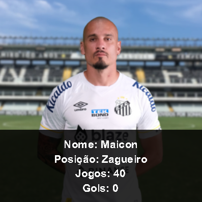
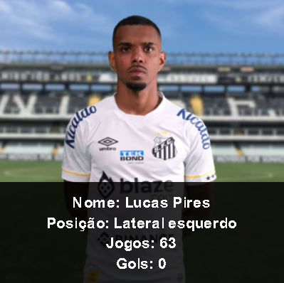
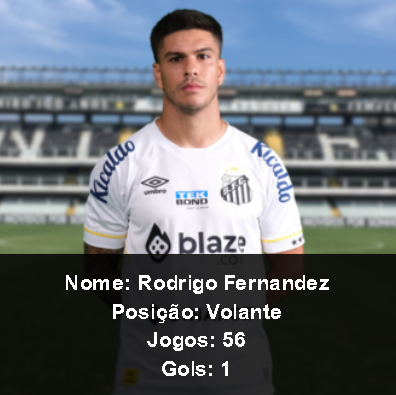
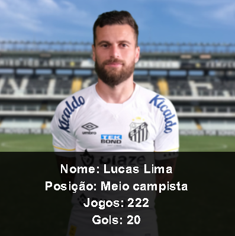
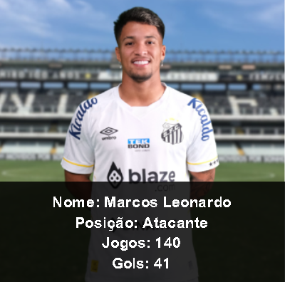
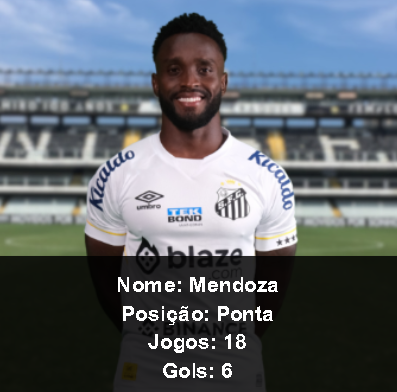
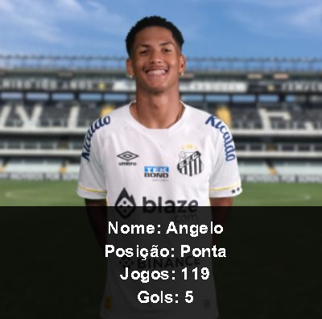
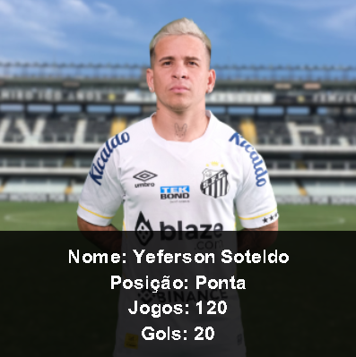
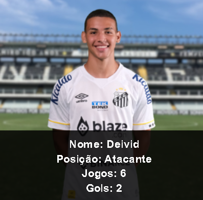

Nossos jogadores










Desde 14 de abril de 1912, o Santos acumula histórias e conquistas. O Alvinegro possui 22 Campeonatos Paulistas, 8 Campeonatos Brasileiros, 1 Copa do Brasil, 3 Libertadores, 2 Mundiais, 1 Copa Conmebol, 1 Recopa Sulamericana, 1 Recopa Mundial e 5 Torneios Rio-São Paulo.
O amor entre Pelé e o Santos FC é uma história de devoção mútua que transcende o campo de futebol. Pelé, nascido Edson Arantes do Nascimento, é considerado um dos maiores jogadores de futebol de todos os tempos, e sua carreira brilhante foi em grande parte dedicada ao Santos FC. Pelé começou a jogar pelo Santos FC em 1956, quando tinha apenas 15 anos de idade. Ele rapidamente se tornou uma estrela e, ao longo dos anos, ajudou o clube a conquistar uma série de títulos importantes, incluindo dez Campeonatos Paulistas, seis Torneios Rio-São Paulo e duas Copas Libertadores. Durante sua passagem pelo Santos FC, Pelé mostrou uma habilidade incrível, marcando gols espetaculares e encantando o público com sua técnica excepcional. Ele se tornou o maior artilheiro da história do clube, com mais de 1.000 gols em partidas oficiais.